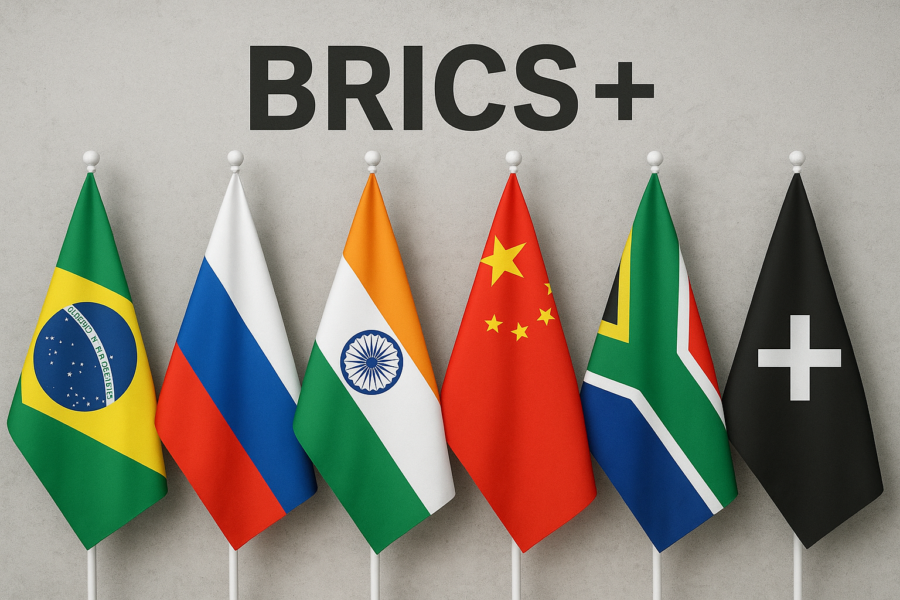

2001 : Le concept
L'économiste Jim O'Neill de Goldman Sachs invente l'acronyme BRIC pour désigner les économies à forte croissance du Brésil, de la Russie, de l'Inde et de la Chine.

Les BRICS+ sont un groupe de pays émergents qui se sont regroupés pour accroître leur influence sur la scène mondiale et chercher une alternative aux organisations internationales traditionnellement dominées par l'Occident. Ce site a pour but d'explorer leur histoire, leurs ambitions et leur poids économique croissant.
Cliquez sur une année pour voir les détails plus bas.
| Année | Événement Majeur |
|---|---|
| 2001 | Invention de l'acronyme "BRIC" |
| 2009 | Premier sommet officiel des BRIC |
| 2010 | L'Afrique du Sud rejoint le groupe (Devient BRICS) |
| 2024 | Élargissement majeur (Devient BRICS+) |
L'économiste Jim O'Neill de Goldman Sachs invente l'acronyme BRIC pour désigner les économies à forte croissance du Brésil, de la Russie, de l'Inde et de la Chine.
Les dirigeants des quatre pays tiennent leur premier sommet officiel à Iekaterinbourg, en Russie, formalisant leur coopération.
L'Afrique du Sud est officiellement invitée à rejoindre le groupe, qui devient alors les BRICS, ajoutant une représentation africaine majeure.
Suite au sommet de 2023, l'Égypte, l'Éthiopie, l'Iran, l'Arabie Saoudite et les Émirats arabes unis rejoignent le bloc, marquant une expansion historique.